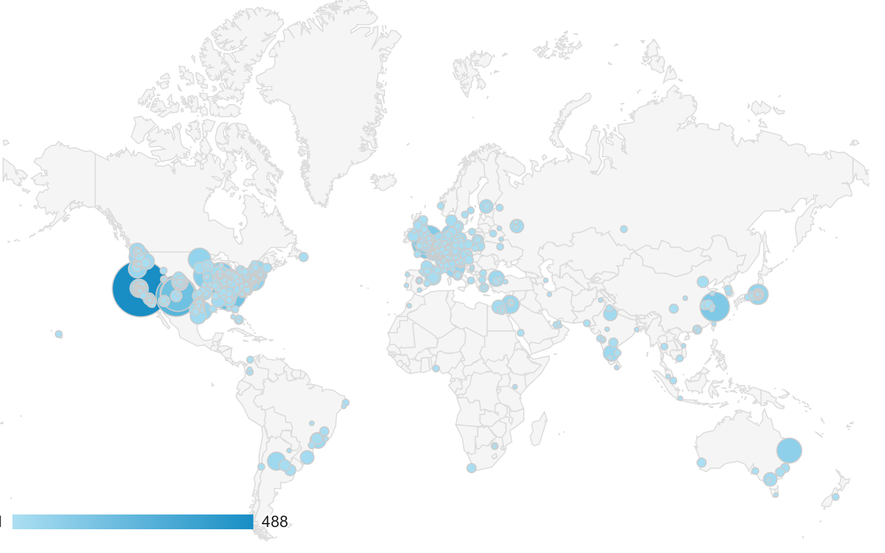
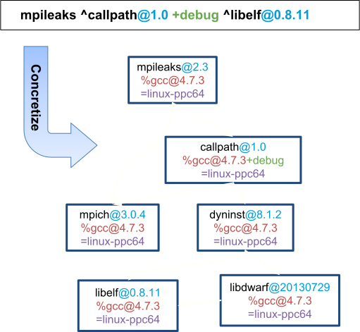

Spack: a Package Manager for Scientific Software
Massimiliano Culpo - EPFL, SCITASSpack in a nutshell
A 10 minutes introduction to the toolSpack is a package manager!
- Builds from sources, supports binary packaging
- Support for supercomputers, linux and MacOS
- Multiple configurations of the same software
- Provides packages for multiple languages
- Can be used for deployment, development or QA
Who can profit from Spack?
- End users of HPC software
- HPC application teams
- Package developers
- User support teams at HPC centers
Spack is used worldwide!

Sessions on spack.readthedocs.io for one month
Contributions to Spack

Clone it and you're ready to go!
$ git clone https://github.com/spack/spack.git
$ . spack/share/spack/setup-env.sh
$ spack install hdf5
Custom configurations
# Install a specific version by appending @
$ spack install hdf5@1.10.1
# Specify a compiler (and optional version), with %
$ spack install hdf5@1.10.1 %gcc@4.7.3
# Add special boolean compile-time options with +
$ spack install hdf5@1.10.1 +szip
# Add custom compiler flags
$ spack install hdf5@1.10.1 cppflags="-O3 -floop-block"
# Cross-compile on a Cray or Blue Gene/Q
$ spack install hdf5@1.10.1 target=backend
Packages are Python classes
class Kripke(Package):
"""Kripke is a simple, scalable, 3D Sn
deterministic particle transport mini app.
"""
homepage = "https://codesign.llnl.gov/kripke.php"
url = "https://codesign.llnl.gov/kripke-1.1.tar.gz"
version('1.1', '7fe6f2b26ed983a6ce5495ab701f85bf')
variant('mpi', default=True, description='Build with MPI.')
depends_on('mpi', when="+mpi")
How Spack is different from Easybuild?
Spack fights combinatorics with combinatorics!
Complexity of a typical HPC ecosystem

The spec syntax describes user's needs
$ spack install mpileaks
$ spack install mpileaks@3.3
$ spack install mpileaks@3.3 %gcc@5.3.0
$ spack install mpileaks@3.3 %gcc@5.3.0 +threads
$ spack install mpileaks@3.3 cppflags=”-O3”
$ spack install mpileaks@3.3 target=haswell
$ spack install mpileaks@3.3 ^mpich@3.2 %gcc@5.3.0
Directives model allowed configurations
class Openblas(MakefilePackage):
"""OpenBLAS: An optimized BLAS library"""
homepage = 'http://www.openblas.net'
url = 'http://github.com/OpenBLAS/v0.2.19.tar.gz'
version('0.3.4', sha256='4b4b4453251')
version('0.3.3', sha256='49d88f4494a')
variant('shared', default=True,
description='Build shared libraries')
variant('ilp64', default=False,
description='64 bit integers')
conflicts('%intel@16', when='@0.2.15:0.2.19')
The concretizer fills in missing details

The abstract spec is turned into a concrete configuration
that can be installed
Each configuration is installed in its own prefix
The results of concretization can be queried
$ spack spec -Il hdf5~mpi
Input spec
--------------------------------
- hdf5~mpi
Concretized
--------------------------------
[ ] xucyflh hdf5@1.10.4%gcc@8.2.0~cxx~debug~fortran~hl~mpi+pic+shared~szip~threadsafe arch=linux-ubuntu18.04-x86_64
[+] ivqu252 ^zlib@1.2.11%gcc@8.2.0+optimize+pic+shared arch=linux-ubuntu18.04-x86_64
Spack can manipulate installed software!
Installed configurations are stored in a JSON file
{
"database": {
"installs": {
"ivqu252fvh7r5iar6zwx4fmeoxiykln7": {
"explicit": true,
"installation_time": 1548272929.178339,
"ref_count": 0,
"installed": true,
"path": "/home/mculpo/PycharmProjects/spack/opt/spack/linux-ubuntu18.04-x86_64/gcc-8.2.0/zlib-1.2.11-ivqu252fvh7r5iar6zwx4fmeoxiykln7",
"spec": {
"zlib": {
"version": "1.2.11",
"arch": {
"platform": "linux",
"platform_os": "ubuntu18.04",
"target": "x86_64"
},
"compiler": {
"name": "gcc",
"version": "8.2.0"
},
"namespace": "builtin",
"parameters": {
"optimize": true,
"pic": true,
"shared": true,
"cflags": [],
"cppflags": [],
"cxxflags": [],
"fflags": [],
"ldflags": [],
"ldlibs": []
}
}
}
}
},
"version": "0.9.3"
}
}
opt/spack/.spack-db/index.json
Users can query what's installed
$ spack find zlib
==> 1 installed package
-- linux-ubuntu18.04-x86_64 / gcc@8.2.0 ----
zlib@1.2.11
$ spack find --start-date 'a month ago'
==> 3 installed packages
-- linux-ubuntu18.04-x86_64 / gcc@8.2.0 ----
hdf5@1.10.4 openblas@0.3.5 zlib@1.2.11
Software can be easily uninstalled
$ spack find zlib
==> 2 installed packages
-- linux-ubuntu18.04-x86_64 / gcc@8.2.0 ----
zlib@1.2.8 zlib@1.2.11
$ spack uninstall zlib@1.2.8
==> The following packages will be uninstalled:
-- linux-ubuntu18.04-x86_64 / gcc@8.2.0 ----
yxoie27 zlib@1.2.8%gcc+optimize+pic+shared
==> Do you want to proceed? [y/N] y
==> Successfully uninstalled zlib@1.2.8%gcc@8.2.0 [...] /yxoie27
Module files are post-install artifacts
- Output highly customizable using YAML files
- By default generated via post-install hooks
- Can be managed via command line afterwards
- Everything is powered by Jinja2 templates
- Support for both TCL and Lua modules